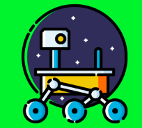

Instructions
PATHFINDER
Start:

Goal:
Block:
Path:
Reset
Clear Path
Breadth-first
Dijkstra
Best First
Best First - manhattan
Best First - Euclidean
Best First - octile
Best First - chebyshev
A*
A* - manhattan
A* - Euclidean
A* - octile
A* - chebyshev
IDA*
IDA* - manhattan
IDA* - Euclidean
IDA* - octile
IDA* - chebyshev
Weight
Allow Diagonal
Project hosted on
Github